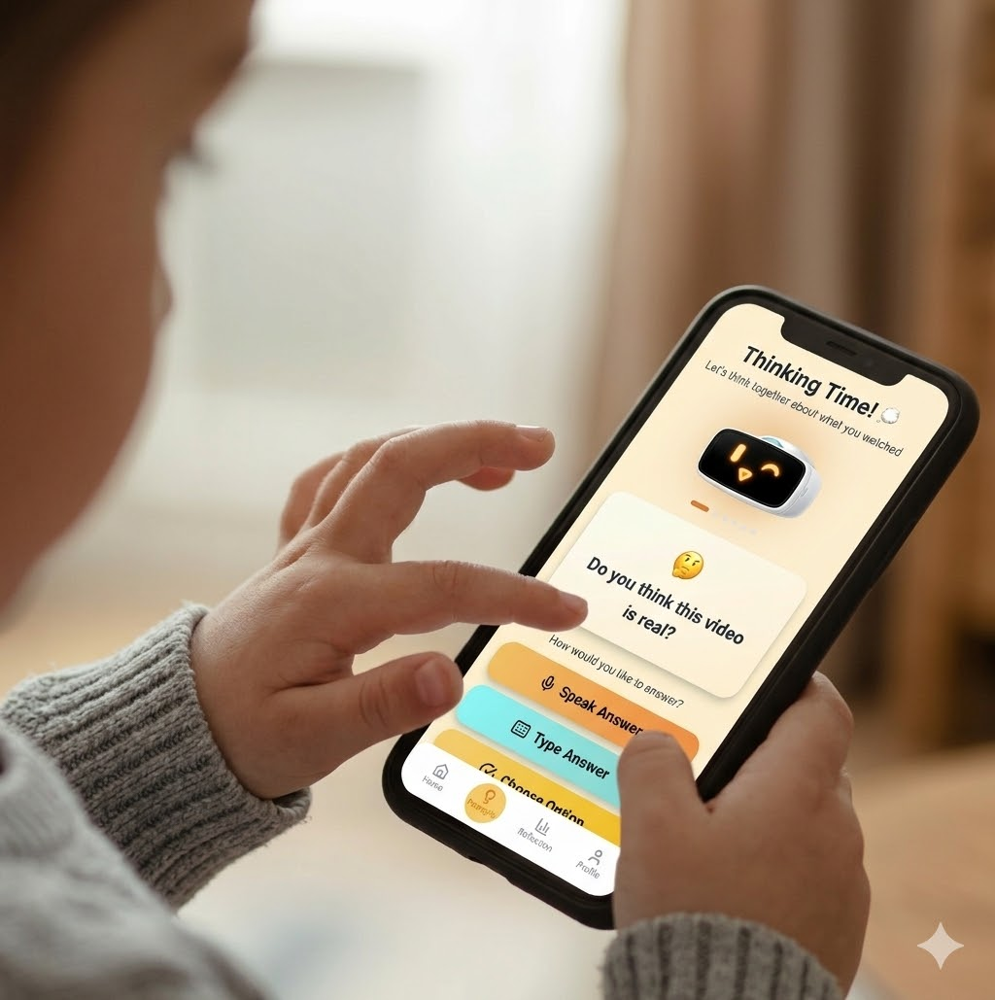
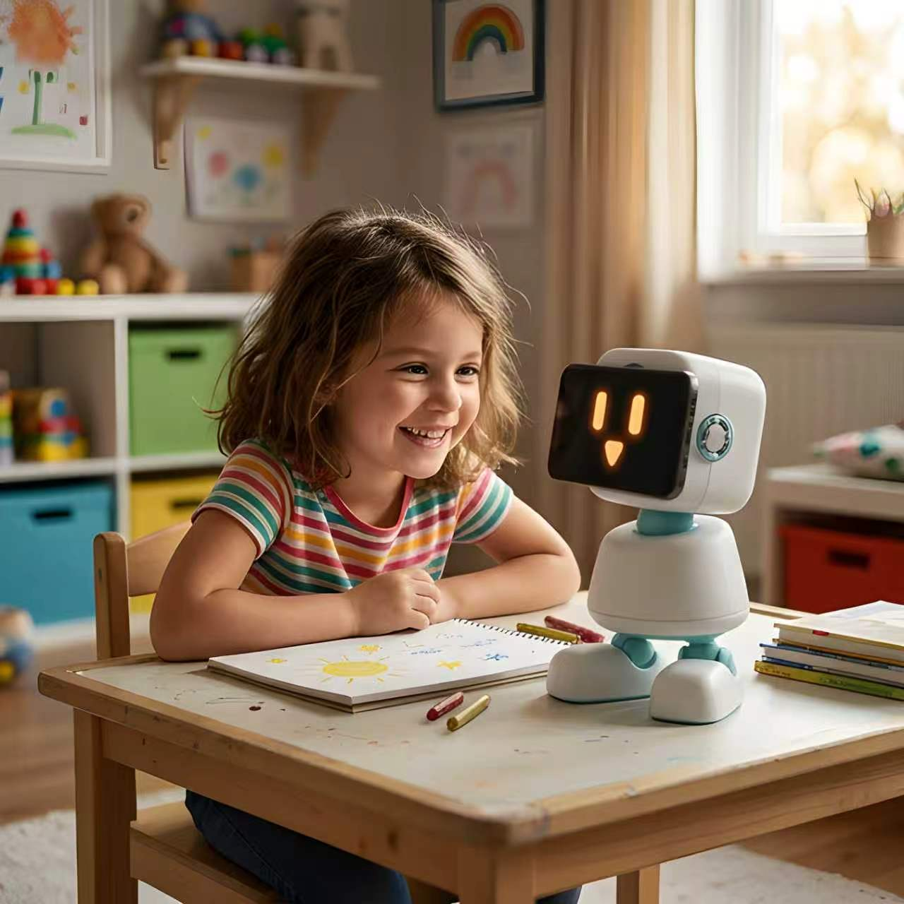

3.6 hrs
Average daily screen time for children under 8, leading to decreased physical activity.

Bumi is an AI companion that gently interrupts scrolling habits and asks questions that build critical thinking, self-awareness and emotional intelligence.
Help shape Bumi as he develops
Every day, children absorb hours of content, repeating it, believing it and sharing it without ever stopping to ask whether it's worth thinking about
Average daily screen time for children under 8, leading to decreased physical activity.
Of parents report regular "screen time meltdowns" when it's time to put devices away.
Of educational apps use predatory mechanics that create digital dependency early on.

Whether you start with the app or go all in with the robot, Bumi works toward the same goal, a child who thinks before they scroll

The app works wherever your child's phone does. The focus is building the habit of critical thinking so your child doesn't just consume content, they question it.

Research shows children naturally disengage from screens when a responsive physical companion is present. Bumi draws your child into the real world through play and movement.


Instead of telling kids what to think, Bumi asks questions that make them think for themselves, building the habit of pausing, questioning, and forming their own opinion before scrolling on.
Bumi adjusts as your child grows asking harder questions, giving more autonomy, and evolving from playful companion to thoughtful coach between ages 8 and 15.


Tune Bumi to your child. Adjust pause frequency, question intensity, and screen limits anytime, all from one simple dashboard.

Bumi doesn't have to stay on your screen. Dock your phone onto his body and he walks right into the real world, unlocking a whole new dimension of features

*Initial state of Bumi
Your phone's camera becomes Bumi's eyes

Touch sensor shell

Motor joints, what makes him move and waddle


Mounting dock for your smartphone

Type C
Charger behind

Bumi can be landscape or portrait


Place the phone on Bumi, and he watches with your child, detects low-quality content, and prompts simple questions to turn scrolling into thinking.

Bumi can be set to run away when child’s screen time is up. Get your child moving to chase him down!

Beyond his expressive face, Bumi can respond to being picked up, pet or squeezed, reacting in the moment like a companion that actually knows you.

Everything your child needs to build healthier screen habits
 Gentle pauses break scrolling at set intervals
Gentle pauses break scrolling at set intervals Prompts simple questions to encourage reflection
Prompts simple questions to encourage reflection Works with Screen Time & Family Link
Works with Screen Time & Family Link Parent dashboard controls limits & frequency
Parent dashboard controls limits & frequency Adapts with your child (ages 8–15)
Adapts with your child (ages 8–15) Privacy-first: no tracking or logging
Privacy-first: no tracking or loggingBest for: Families who want to start with screen time that actively develops their child's thinking.

Get Bumi the Robot + 1 year premium subscription included
 Gentle pauses break scrolling at set intervals
Gentle pauses break scrolling at set intervals Prompts simple questions to encourage reflection
Prompts simple questions to encourage reflection Works with Screen Time & Family Link
Works with Screen Time & Family Link Parent dashboard controls limits & frequency
Parent dashboard controls limits & frequency Adapts with your child (ages 8–15)
Adapts with your child (ages 8–15) Privacy-first: no tracking or logging
Privacy-first: no tracking or logging Responds to touch and interaction
Responds to touch and interaction Encourages real-world play
Encourages real-world play Expressive, companion-like feedback
Expressive, companion-like feedback Supports focus during homework
Supports focus during homeworkBest for: Families who want to actively reduce screen time alongside building better habits.
Bumi is built on Socratic Questioning, a research-backed method proven to help children examine their own thinking, challenge assumptions, and develop critical reasoning over time
Most screen time tools block or restrict. Bumi does something harder, it teaches children to make better choices themselves, building digital literacy that lasts beyond any parental control
A child who learns to pause and question at 8 carries that habit into their teens and beyond. Bumi isn't a fix for today's screen time, it's an investment in how your child thinks
Screen time limits control how long your child is on a device. Bumi works on what happens during that time — teaching them to pause, question, and think critically about what they're watching. The goal is a child who makes better choices, not just one who stops when the timer goes off.
Bumi Smart AI reads how they're watching. Scroll speed, app switching, and session length give it enough signal to know when passive consumption has set in and it's time to pause
Bumi is privacy-first. We don't track viewing history, log conversations, or store personal data beyond what's needed to run the app. No data is ever sold or shared
Bumi is built for children aged 8 to 15. The questions and level of autonomy adjust automatically as your child grows and its teachings stays relevant long after.
Bumi is currently in development. By registering interest you're not committing to a purchase, you're letting us know you'd want this for your family. We'll only reach out when there's something worth sharing.
Leave your email below to register interest and be the first to hear when Bumi is ready. No spam, we'll only reach out when it matters.